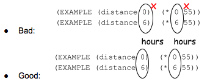
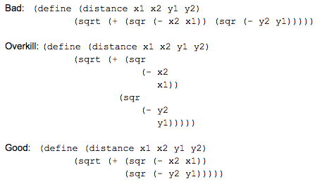

Obviously, programmers care that their programs produce the right answers. Good programmers, however, care about much more! They also care that programs are easy to read, understand, and modify. Sometimes, a programmer has to change their code a few weeks or months later to make it do something different. Sometimes, a programmer has to change someone else’s code to make it do something different. A high-quality program is designed to be maintained over time, potentially by people other than the original programmer.
The guidelines in the rest of this document target different aspects of creating readable and maintainable code.
Grading a Design Recipe
The design recipe is not just a method for developing a program: it also provides useful guidelines for grading student work. When grading a program, consider the following questions:
Contract and Purpose
Every part of a student’s Contract and Purpose statement comes directly from the original word problem.
-
Does the contract include all three parts: a
name,domainandrange? -
Does the
namereflect what the function computes?Write a function that takes in a topping and returns the value of a pizza with that topping - Confusing: pizza: string -> number - Bad: c: string -> number - Good: cost: string -> numberEven though math textbooks often use generic function names like f and g, when writing programs we prefer descriptive names because they will help us remember what the function does when we refer back to it later.
-
Are the Domain(s) and Range
typesrather than descriptive words?Write a function ‘red-star’ that takes in a radius and draws a solid red star of that size. - Bad: red-star: size -> image - Better: red-star: number -> imageGood contracts are clear about what kind of data can be provided to the function. Types (e.g.
number,string,imageandBoolean) are unambiguous, whereas descriptive types could be interpreted differently by different people. The descriptive content belongs in the Purpose Statement. -
Does the Purpose Statement contain all of the relevant parts of the original word problem, and nothing else?
A car is moving at 55mph down a country road. Write a function that describes its distance as a function of time Copying: a car goes 55mph. write a function that describes distance as a function of time. - Bad: how long has the car been moving? - Bad: how far did the car go? - Weak: given a time, how far did the car go on a country road? - Weak: given a time, how far did a car moving 55mph go? - Weak: how far did the car go in a given # of hours? - Good: given a # hours, how far did a car moving 55mph go?Good purpose statements should be a thoughtful restatement of the original problem, in the student’s own words.They should include all of the relevant information from the problem.
Examples
Every part of a student’s Examples should trace back to the Contract and Purpose Statement. If an example cannot be completely written based on the contract and purpose, check back to the previous section to see what the student is missing.
-
Do the function’s name and types of input and output match the contract?
Write a function ‘red-star’ that takes in a radius and draws a solid red star of that size. ; red-star : Number -> Image ; given a radius, draw a solid red star of that size - Bad: (EXAMPLE (rs 50 “red”) 50)) - Bad: (EXAMPLE (rs 126) (star 126 “solid” “red”)) - Good: (EXAMPLE (red-star 65) (star 65 “solid” “red”)) -
Is at least one example easy enough that the student can be sure they have the right answer? It’s always good to have a baseline to start from!
A car is moving at 55mph. Write a function that describes it’s distance as a function of time. ; distance : Number -> Number ; given # hours, how far did a car moving 55mph go? - Good: (EXAMPLE (distance 0)(* 0 55)) -
Do the examples use different values for each input?
Write a function ‘red-star’ that takes in a radius and draws a solid red star of that size. ; red-star : Number -> Image ; given a radius, draw a solid red star of that size Bad: (EXAMPLE (red-star 50) (star 50 “solid” “red”)) (EXAMPLE (red-star 50) (star 50 “solid” “red”)) Good: (EXAMPLE (red-star 19) (star 19 “solid” “red”)) (EXAMPLE (red-star 22) (star 22 “solid” “red”))Varying the inputs in the examples helps make sure that the function actually uses all of the inputs. In the example above, the student might accidentally use 50 as the size in their function definition. Since all of the examples also used 50 as the size, the student wouldn’t discover the problem.
-
Is there an example for each interesting input?
Write a function ‘safe-left?’ that takes in an x-coordinate and checks whether if it is greater than 50 ; safe-left? : Number -> Boolean ; is the given x-coordinate > -50? Good: (EXAMPLE (safe-left? 500) (> 500 -50)) (EXAMPLE (safe-left? -50) (> -50 -50))As your students progress in the curriculum, picking good examples is one of the most important skills they can develop. Think about a function like safe-left?, that detects whether a character is within the screen on the left side. A good set of examples would cover three situations: one in the middle of the screen, one at the left edge, and one off-screen just beyond the left edge. Whenever a function should produce different answers around some boundary, a good set of examples will check the inputs that define the boundary, as well inputs on either side of the boundary.
-
For functions that produce Booleans…
-
are there are both examples that would produce true and examples that would produce false?
-
-
For functions that use cond…
-
Is there at least one example that satisfies each of the conditions?
-
Is there an example that covers the ‘else’ condition?
-
-
-
Are the variables circled, and given names that come from the purpose statement?
A car is moving at 55mph. Write a function that describes it’s distance as a function of time. ; distance : Number -> Number ; given # hours, how far did a car moving 55mph go?
🖼Show image
{kind=link}
Definitions
Every part of a student’s definition should be able to be traced back to the Examples and the labeled variables. If the definition cannot be completely written based on the Examples and labels, check back to the previous section to see what the student is missing.
-
Does the function header match the pattern established in the examples?
-
Does the name in the header match the one in the examples?
-
Do the number and name of the variables to the function match the number and names of the variables labeled in the examples?
Write a function ‘red-star’ that takes in a radius and draws a solid red star of that size. ; red-star : Number -> Image ; given a radius, draw a solid red star of that sizeimage:red-star.png["red star", , , title="red star"]link:red-star.png[🖼Show image,role="gdrive-only"]
-
-
Bad: (define (rs x color) (star x “solid” color))
-
Bad: (define (rs x) (star x “solid” color))
-
Weak: (define (red-star x) (star x “solid” “red”))
-
Good: (define (red-star radius) (star radius “solid” “red”))
-
Does the code have line-breaks and indentation in places that make the code easy to read?

🖼Show image
{kind=link}
Grading Programs Containing Multiple Functions
When a program contains multiple functions (such as a completed game), we are interested in whether the functions and their tests are organized well within the file, and whether they share key details appropriately. Specifically:
-
Are the examples for each function next to the function in the file (rather than all of the functions in one place and all of the examples in another)?
This organization makes it easy to check what functions are supposed to do (this is easier to appreciate on functions with cond, in which different examples illustrate different clauses). It also makes it easy to find the examples to update if you want to change the behavior of the function later.
-
If two functions share a common piece of data that doesn’t change with the inputs, is that data defined as a constant?
Imagine that two functions reference the width of the screen. In this case, the program should have a constant (such as WIDTH) that gets used in both functions. This helps maintain the program: if we want to change the program to work on a different screen size, the constant lets us change the width in one place in the file, rather than have to look for all of the places that depend on the width (we might miss one, which would break our program).
-
Do the names of the functions suggest what role each function plays in the overall program? Names such as update-player and update-target make it clear what role each function plays in the program. In contrast, names such as update1 and update2 wouldn’t be as useful. Good names help programmers navigate the code.
Getting More Advanced
The above guidelines should be enough to help you grade programs in Bootstrap:Algebra. As your students start writing more complicated programs, you would also check whether they broke functions down into appropriate-size chunks, whether they shared repeated computations across functions, and some other metrics that help define readable and maintainable code. For now, focus on these basic program-development skills with your students, and you will set them up to progress to richer programming problems.
These materials were developed partly through support of the National Science Foundation,
(awards 1042210, 1535276, 1648684, and 1738598).  Bootstrap by the Bootstrap Community is licensed under a Creative Commons 4.0 Unported License. This license does not grant permission to run training or professional development. Offering training or professional development with materials substantially derived from Bootstrap must be approved in writing by a Bootstrap Director. Permissions beyond the scope of this license, such as to run training, may be available by contacting contact@BootstrapWorld.org.
Bootstrap by the Bootstrap Community is licensed under a Creative Commons 4.0 Unported License. This license does not grant permission to run training or professional development. Offering training or professional development with materials substantially derived from Bootstrap must be approved in writing by a Bootstrap Director. Permissions beyond the scope of this license, such as to run training, may be available by contacting contact@BootstrapWorld.org.